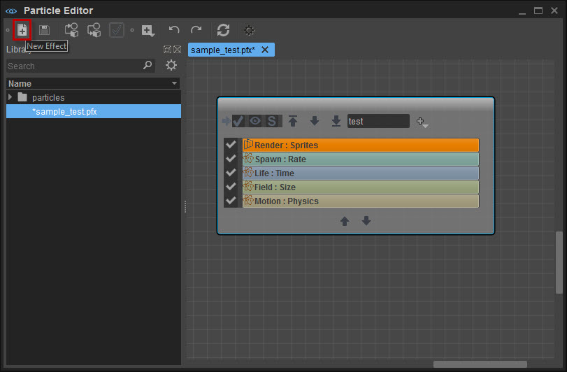
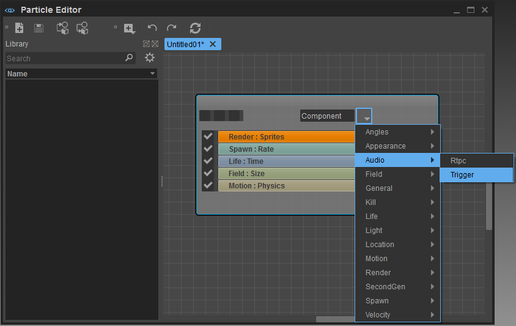
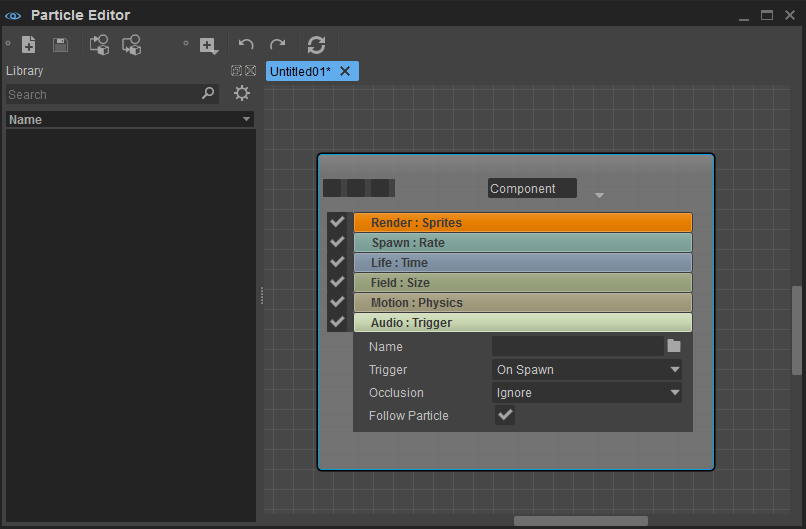
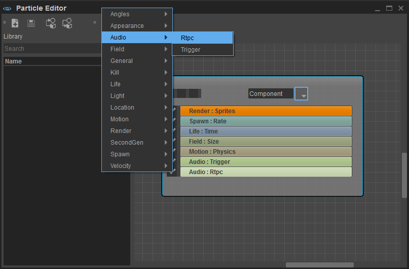
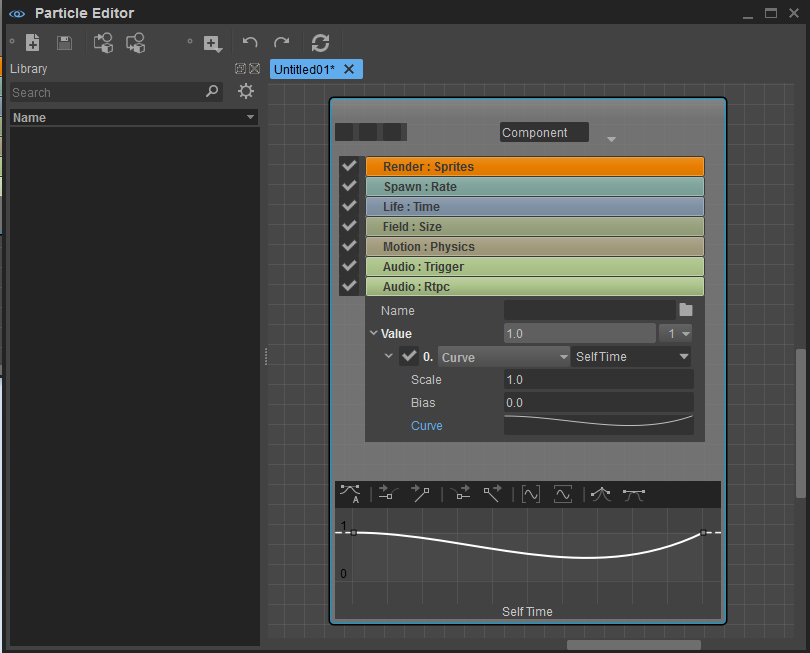

Overview
This section describes how to add Audio in the Particle Editor.
You can find more about the concept of the Particle Editor under Particles as well as more details about the Tool under Particle Editor.
Adding an Audio Trigger
Create a new Effect using the New Effect button in the top-left corner of the toolbar.
This will spawn a new untitled Particle Effect with following Components:

First, you have to add the respective Audio Components by clicking the drop-down list next to the Component field.

There are two options available. Audio Trigger and RTPC. Selecting the Trigger will create an additional Audio: Trigger component. Double-click it to expand and show the Audio Trigger properties.

Field | Description |
|---|---|
| Name | Click to select an Audio Trigger from the Audio Controls |
| Trigger | Defines when the Trigger is executed |
| Occlusion | Allows selecting amount of occlusion Raycast Options |
| Follow Particle | When checked it will follow the Entity Position |
Clicking in the Name field will open the Audio Controls to choose the Audio Trigger from.
Adding an Audio RTPC
Similar to the Audio Trigger we can also add a component named Audio: RTPC to each particle effect via the Dropdown Menu. 
Double-click it to expand and show the Audio: RTPC Properties.

Field | Description |
|---|---|
| Name | Click to select a RTPC from the Audio Controls |
| Value | Allows to set a value or curve for advanced behavior |
Clicking the Name field will open the Audio Controls to choose the RTPC.